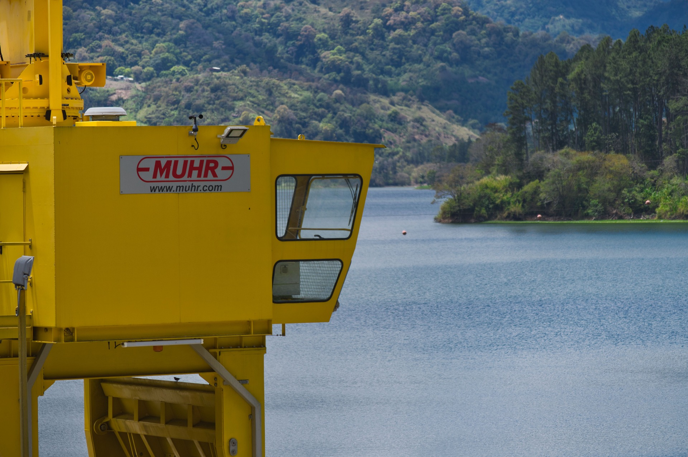
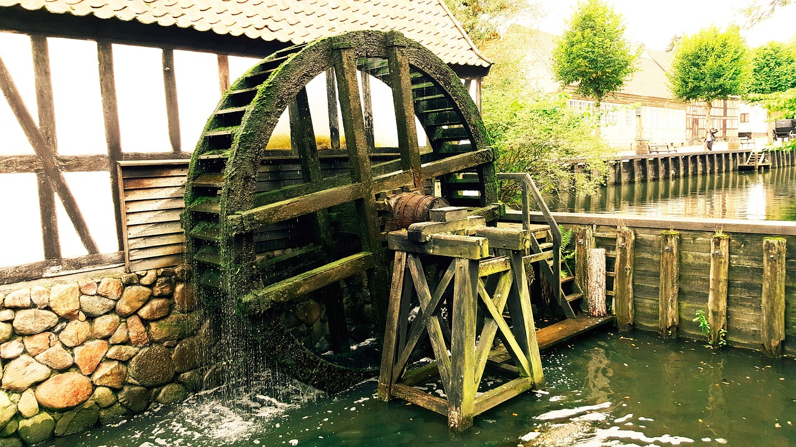

¿Qué es la Energía Hidroeléctrica? 💧
La energía hidroeléctrica es aquella que se obtiene aprovechando la fuerza del agua en movimiento para generar electricidad. Se produce en centrales hidroeléctricas, donde el agua, al caer desde cierta altura, mueve turbinas que están conectadas a generadores eléctricos, transformando la energía cinética del agua en energía eléctrica.
fuente: https://ovacen.com/energias-renovables/hidroelectrica/
Un Poco de Historia ⌛
La energía hidroeléctrica se remonta a la antigüedad con el uso de ruedas de agua para moler o para el riego, pero su desarrollo como generador de electricidad se impulsó significativamente durante la Revolución Industrial a finales del siglo XIX, con inventos como la turbina hidráulica de alta eficiencia y el generador eléctrico, siendo las primeras centrales construidas a partir de 1880.
fuente: https://solar-energia.net/energias-renovables/energia-hidraulica/historia
Energia Hidroelectrica en Colombia 💛💙❤️
La energía hidroeléctrica en Colombia inició a finales del siglo XIX con iniciativas privadas. En 1928, la Ley 113 la declaró de interés público, marcando su desarrollo formal. En 1994, reformas legales permitieron la participación privada. En la actualidad laa energía hidroeléctrica en Colombia produce el 70% de la generación eléctrica de Colombia siendo asi, una fuente de energía renovable muy importante para el país.
En Colombia hay mas de 20 centrales Hidroelectricas activas, de las cuales cabe resaltar algunas
- Central Hidroeléctrica de El Guavio (Ubalá, Cundinamarca)
- Central Hidroeléctrica San Carlos (San Carlos, Antioquia)
- Central Hidroeléctrica de Hidroituango (Puerto Valdivia, Antioquia)
- Central Hidroeléctrica Urra I (Cordoba, Monteria)
- Central Hidroeléctrica Chivor (Santa Maria, Boyaca)